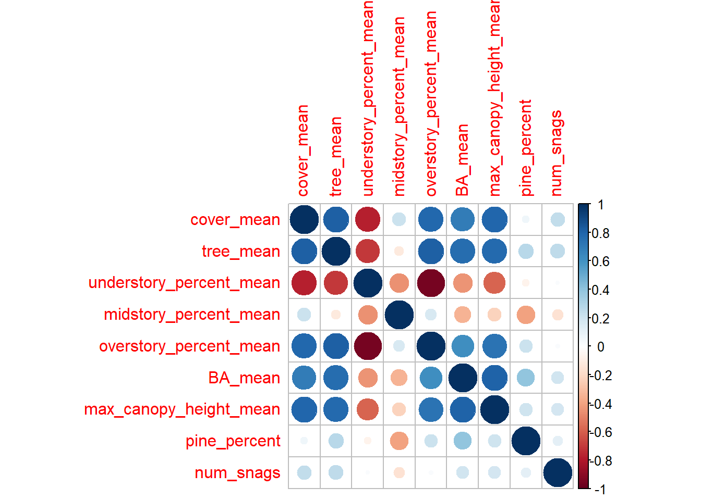

Habitat Assessment
Habitat variables were obtained to explain the patterns in foraging behavior of each species as an alternative hypothesis. Habitat metrics also provide context for the study and makes it more translatable to other systems.
We collected information on dead trees (snags), burn history, and habitat structure.
Terrestrial laser scanning
To date, we have obtained 635 scans across all plots.Terrestrial laser scanning (similar to LiDAR) is capable of deriving 200+ metrics from the environment in under two minutes by shooting lasers out in many directions and retrieving the resulting distance to conceptualize the structure of the environment. To date, we have obtained 635 scans across all plots. Belo are the results from those scans.
Table: Habitat variables for each plot.
| Plot_ID| cover_mean| tree_mean| understory_percent_mean| midstory_percent_mean| overstory_percent_mean| BA_mean| max_canopy_height_mean| pine_percent|geometry |
|-------:|----------:|---------:|-----------------------:|---------------------:|----------------------:|---------:|----------------------:|------------:|:------------------------------|
| 1| 0.6120823| 4.2857143| 0.3410709| 0.1714493| 0.4874798| 8.918582| 25.81564| 75.94595|MULTIPOINT ((787162 3409323... |
| 2| 0.6540212| 6.0555556| 0.4616246| 0.0765242| 0.4618512| 12.564481| 25.54644| 100.00000|MULTIPOINT ((786367.1 34086... |
| 3| 0.5179614| 3.8947368| 0.5357848| 0.0661411| 0.3980740| 11.052420| 27.16563| 88.23529|MULTIPOINT ((785359 3407886... |
| 4| 0.5986098| 2.5555556| 0.4251836| 0.1448807| 0.4299356| 8.609381| 23.51678| 82.20339|MULTIPOINT ((786874.4 34076... |
| 5| 0.7010658| 5.4500000| 0.4622512| 0.0986805| 0.4390683| 13.326489| 27.42495| 96.03960|MULTIPOINT ((785679.2 34067... |
| 6| 0.6385592| 5.5000000| 0.5159679| 0.0988940| 0.3851381| 13.309988| 25.71575| 95.32238|MULTIPOINT ((787122 3406691... |
| 7| 0.5109595| 5.4285714| 0.5601987| 0.0689392| 0.3708621| 11.261179| 24.67481| 100.00000|MULTIPOINT ((786852.1 34055... |
| 8| 0.5500641| 3.8500000| 0.6138584| 0.1415437| 0.2445978| 5.582776| 20.60355| 66.04414|MULTIPOINT ((782429 3418483... |
| 9| 0.5861884| 2.6190476| 0.6496354| 0.0818431| 0.2685216| 10.774183| 28.00024| 67.96537|MULTIPOINT ((784397.2 34186... |
| 10| 0.5657924| 3.5714286| 0.6511306| 0.0450912| 0.3037781| 13.438765| 26.95919| 98.95833|MULTIPOINT ((785862.7 34187... |
| 11| 0.6271094| 3.5238095| 0.6518783| 0.0723386| 0.2757832| 14.268209| 26.39195| 87.98283|MULTIPOINT ((785266.2 34179... |
| 12| 0.5928217| 4.5714286| 0.6050781| 0.0631782| 0.3317438| 16.988551| 28.71938| 97.27891|MULTIPOINT ((785718.1 34167... |
| 13| 0.4863689| 2.8947368| 0.5144449| 0.1007124| 0.3848427| 11.634267| 24.33274| 99.00266|MULTIPOINT ((784821.6 34162... |
| 14| 0.5176373| 2.8421053| 0.6923826| 0.0731522| 0.2344652| 12.101980| 27.99384| 86.02941|MULTIPOINT ((785165.9 34153... |
| 15| 0.2891661| 1.1428571| 0.7399194| 0.1023224| 0.1577582| 3.810238| 13.23414| 94.28571|MULTIPOINT ((817418.4 33950... |
| 16| 0.3634980| 0.9000000| 0.6775914| 0.1700130| 0.1523956| 2.317756| 11.54350| 49.25373|MULTIPOINT ((818538.2 33947... |
| 17| 0.3072008| 1.3333333| 0.7729110| 0.0765233| 0.1505657| 12.571259| 12.40824| 96.29630|MULTIPOINT ((817096.3 33942... |
| 18| 0.3574319| 1.4736842| 0.7066372| 0.0599020| 0.2334609| 5.276747| 21.58889| 93.67089|MULTIPOINT ((820519.9 33939... |
| 19| 0.3010618| 0.9523810| 0.7651440| 0.0974450| 0.1374110| 4.326497| 15.13376| 93.65079|MULTIPOINT ((816095.1 33936... |
| 20| 0.2691893| 1.1904762| 0.7456773| 0.0791050| 0.1752177| 3.226501| 13.67062| 86.53846|MULTIPOINT ((818463.2 33934... |
| 21| 0.3309525| 0.9047619| 0.8035900| 0.0987552| 0.0976548| 3.360577| 13.48562| 38.75000|MULTIPOINT ((817513.8 33928... |
| 22| 0.4094859| 1.6000000| 0.4775843| 0.1612269| 0.3611889| 4.936469| 18.63970| 75.51020|MULTIPOINT ((819288.2 33927... |
| 23| 0.3136426| 2.0500000| 0.7498649| 0.0565794| 0.1935557| 5.013390| 18.32080| 77.52809|MULTIPOINT ((818418.1 33923... |
| 24| 0.6559702| 2.8000000| 0.4980977| 0.1533552| 0.3485471| 7.539725| 20.34905| 60.28369|MULTIPOINT ((764760.7 33966... |
| 25| 0.4269941| 1.6190476| 0.7924680| 0.0662866| 0.1412453| 7.669954| 24.51838| 68.57143|MULTIPOINT ((766359.2 33965... |
| 26| 0.4274035| 1.4761905| 0.7082870| 0.0879723| 0.2037407| 6.741717| 20.57314| 93.58974|MULTIPOINT ((766384.7 33954... |
| 27| 0.3998056| 1.6190476| 0.7337093| 0.1001162| 0.1661745| 3.987555| 16.96019| 96.96970|MULTIPOINT ((763534.5 33953... |
| 28| 0.4698986| 1.2666667| 0.7058376| 0.1298118| 0.1643506| 5.656607| 17.90907| 91.97080|MULTIPOINT ((764497.9 33952... |
| 29| 0.5171767| 1.8095238| 0.6750168| 0.1696879| 0.1552953| 5.530929| 15.00095| 87.83784|MULTIPOINT ((767634.6 33950... |
| 30| 0.4323957| 0.9500000| 0.6268138| 0.1386295| 0.2345567| 5.159311| 17.03875| 94.19355|MULTIPOINT ((764659.1 33943... |
| 31| 0.2331792| 0.7368421| 0.8571703| 0.0426539| 0.1001758| 3.151814| 10.24589| 98.18182|MULTIPOINT ((765657.3 33940... |
| 32| 0.3441856| 1.7500000| 0.7604760| 0.0538814| 0.1856426| 8.254096| 19.56385| 82.08955|MULTIPOINT ((766609.8 33941... |Snag data

There’s a lot of life after death when thinking about dead trees. In the early stages of death, dead trees may become hot-spots of food for woodpeckers as beetle larvae eat at the more susceptible wood. But after a few months, this resource decreases as beetles mature and consume most of the nutritious parts of the tree. Then, over many years the tree decomposes and become a nesting resource for cavity-nesting birds and other taxons.
Here, we describe the quality and quantity of these snag resources. There are many ways to quantify a dead tree including decay class, diameter at breast height (DBH), amount of dead wood, amount of bark, and species. This diversity of snag characteristics within a plot my lead to more diversity within the plot. Thus, I will reduce this dimensionality in the data using multivariate statistics. This will result in a one or two metrics that can be used for further analysis.
We have sampled most of all plots for the presence of dead trees. On average, there are 23.25 snags per plot (range: 0 - 54) for a total of 744 snags recorded across all plots.
Table: Number of snags per plot.
| Plot_ID| num_snags|
|-------:|---------:|
| 1| 9|
| 2| 31|
| 3| 24|
| 4| 0|
| 5| 29|
| 6| 34|
| 7| 41|
| 8| 27|
| 9| 25|
| 10| 22|
| 11| 37|
| 12| 28|
| 13| 34|
| 14| 26|
| 15| 12|
| 16| 30|
| 17| 0|
| 18| 10|
| 19| 2|
| 20| 3|
| 21| 20|
| 22| 15|
| 23| 14|
| 24| 22|
| 25| 32|
| 26| 30|
| 27| 13|
| 28| 36|
| 29| 27|
| 30| 36|
| 31| 54|
| 32| 21|We also want to know something about the diversity of these snags that are in each plot. Are all snags created equal? as mentioned before, probably not, we derive a diversity metric from all the snag’s qualities within a plot. How big is it, how decayed is it, is it a pine or hardwood, and use these to get a Gower distance for the plots.